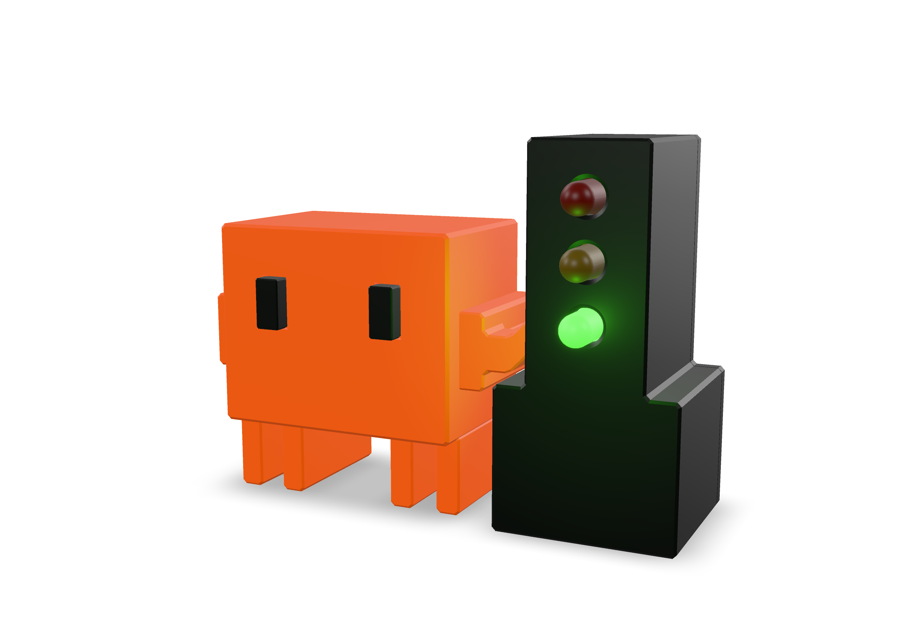

Ваш агент. Один взгляд.
Меньше вкладок.
Больше ясности.
Маленький светофор на столе показывает, чем занят ваш coding-агент. Работает, ждёт или зовёт вас.
Собрать свой ClawLight
- Claude Code
- Codex
- opencode
- Copilot CLI
Всё понятно по цвету.
Без ещё одного окна, которое нужно проверять.
Красный всегда важнее. Для одновременно работающих и ожидающих сессий приоритет выбирается в настройках ClawLight.
Питание рядом. Статус по воздуху.
На столе — лампа.
На Mac — ваши агенты.
ClawLight собирает статусы сессий и передаёт их по Bluetooth. Лампа получает питание по USB от Mac или отдельного блока.
- Bluetooth LE
- Прямое соединение с Mac
- Питание USB
- От Mac или отдельного блока
- Без Wi-Fi
- Ни сети, ни облака для лампы

Небольшой проект.
Настоящая вещь.
Плата SuperMini с Bluetooth LE, три светодиода и по одному резистору 330 Ω. Рекомендуем ESP32-C3 SuperMini. Корпус можно напечатать на 3D-принтере.
- 01Выберите детали
Модели корпуса и рекомендации по печати уже в проекте.
- 02Соберите электронику
Схема подключения и прошивка — в пошаговой инструкции.
- 03Выберите лампу на Mac
ClawLight запомнит устройство и будет отправлять статусы.
На странице рендеры. BLE и управление выводами проверены на одной связке Mac и ESP32-C3. Посадка корпуса и работа внешних светодиодов ещё не проверены.